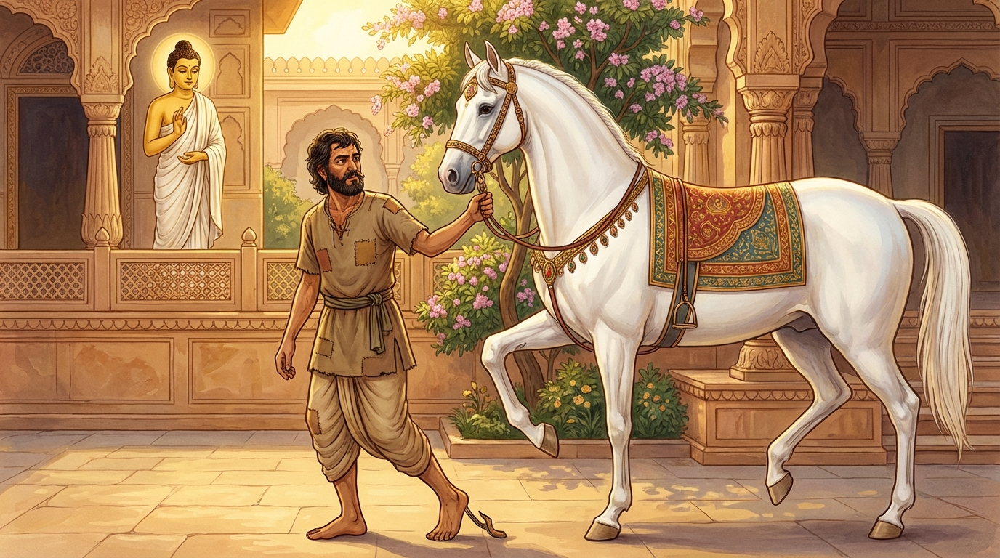

4. ගිරිදත්ත ජාතකය (184)
“දූසිතො ගිරිදත්තෙන” (ගිරිදත්ත විසින් දූෂිත විය) යන මේ ගාථාව බුදුරජාණන් වහන්සේ වේළුවනාරාමයේ වැඩවාසය කරන සමයෙහි විරුද්ධ පක්ෂය (පාප මිත්රයන්) ඇසුරු කරන එක්තරා භික්ෂුවක් අරබයා දේශනා කළ සේක. මෙහි වර්තමාන කථාව මීට පෙර මහිළාමුඛ ජාතකයෙහි (ජාතක අංක 26) විස්තර කරන ලදී. ශාස්තෲන් වහන්සේ, “මහණෙනි, මේ භික්ෂුව විරුද්ධ පක්ෂය ඇසුරු කරන්නේ දැන් පමණක් නොවේ, පෙර ආත්මවලදීත් මොහු විරුද්ධ පක්ෂය ඇසුරු කළ කෙනෙක්මය” යි වදාරා අතීත කථාව ගෙනහැර දැක්වූ සේක.
අතීතයේ බරණැස් නුවර සාම නම් රජ කෙනෙක් රාජ්යය කළහ. එකල බෝසතාණන් වහන්සේ ඇමති කුලයක ඉපිද, වැඩිවියට පත්ව, ඒ රජුට අර්ථයෙන් හා ධර්මයෙන් අනුශාසනා කරන්නා වූහ. රජුට ‘පණ්ඩව’ නම් මංගල අශ්වයෙක් විය. ඒ අශ්වයා පුහුණු කරන්නා වූයේ ‘ගිරිදත්ත’ නම් වූවෙකි. ඔහු කොර ගසන්නෙකි. අශ්වයා කටකලියා ලනුව අල්වාගෙන තමා ඉදිරියෙන් යන ඒ කොර මිනිසා දැක, “මොහු මට උගන්වන්නේ මේ ගමනයි” යන සිතින් ඔහු අනුකරණය කරමින් තමාත් කොර ගසන්නට විය. අශ්වයාගේ මේ කොර බව රජුට දැන්වූහ. රජතුමා පශු වෛද්යවරුන් යැවීය. ඔවුහු ගොස් අශ්වයාගේ ශරීරයේ කිසිදු රෝගයක් නොදැක, “අශ්වයාගේ ශරීරයේ රෝගයක් අපට නොපෙනේ” යැයි රජුට පැවසූහ. එවිට රජතුමා, “මිතුර, යව. මෙයට හේතුව දැනගන්න” යැයි පවසා බෝසතාණන් වහන්සේව යැවීය. එතුමා එහි ගොස්, අශ්වයා පුහුණු කරන කොර මිනිසා ආශ්රය කිරීම නිසා අශ්වයා කොර වී ඇති බව දැන, රජුට ඒ බව දන්වා, “ආශ්රය කිරීමේ දෝෂයෙන් මෙසේ සිදුවේ” යැයි පෙන්වා දෙමින් පළමු ගාථාව වදාළහ.

“සාම රජුගේ පණ්ඩව නම් මංගල අශ්වයා කොර ගසන ගිරිදත්ත විසින් දූෂණය කරන ලදි. (ඒ අශ්වයා) තමාගේ පැරණි (උතුම්) ස්වභාවය හැර දමා, ඔහු (ගිරිදත්ත) අනුකරණය කරයි.”
යනුවෙන් පළමු ගාථාව ප්රකාශ කළහ.
එහි හයො සාමස්ස යනු සාම රජුගේ මංගල අශ්වයාය. පොරාණං පකතිං හිත්වා යනු තමන්ගේ පැරණි ස්වභාවය වූ කුලීන (ශෘංගාර) භාවය අතහැර දමාය. අනුවිධිය්යතී යනු ඔහු අනුව හික්මෙයි හෙවත් අනුකරණය කරයි.
ඉක්බිති රජතුමා, “මිතුර, දැන් කුමක් කළ යුතුදැයි” ඔහුගෙන් විමසීය. එවිට බෝසතාණන් වහන්සේ, “යහපත් අශ්ව පුහුණුකරුවෙකු ලැබූ විට අශ්වයා නැවතත් පෙර තිබූ තත්ත්වයටම පත්වන්නේය” යැයි පවසා දෙවන ගාථාව ද වදාළහ.
“ඉදින් ඒ අශ්වයාට ගැළපෙන, රූ සපුවෙන් හා යහපත් කල්ක්රියාවෙන් යුතු පුරුෂයෙක් මුව ලනුව ගෙන අශ්වයා පිටියෙහි ඇවිද්ද වී නම්, (ඒ අශ්වයා) කොර බව අතහැර වහාම අශ්වයාගේ උතුම් ස්වභාවය අනුව හික්මෙන්නේය.”
යනුවෙන් දෙවන ගාථාව ද වදාළහ.
එහි තනුජො යනු ඔහුට රූපයෙන් හා ගුණයෙන් සමාන වූ (සහෝදරයෙකු වැනි) තැනැත්තායි. මෙය කියන ලද්දේ වෙයි: “මහරජ, ඉදින් ඒ කුලීන වූ ආචාර සම්පන්න අශ්වයාට ගැළපෙන, යහපත් ගති පැවතුම් ඇති, සිඛරාකාරකප්පිතො හෙවත් මනා කොට කපන ලද හිසකෙස් හා රැවුල් ඇති මිනිසෙක්, තං (ඒ අශ්වයා) ආනනෙ ගහෙත්වා (කටකලියාවෙන් ගෙන) අශ්ව මණ්ඩලයෙහි (පිටියෙහි) හික්මවන්නේ නම්, වහාම ඒ අශ්වයා ඒ කොර ගතිය අතහැර ‘මේ ආචාර සම්පන්න අශ්ව පුහුණුකරුවා මා හික්මවයි’ යන හැඟීමෙන් යුතුව වහාම ඔහු අනුව යයි; ඔහු අනුව හික්මෙයි; නැවතත් ප්රකෘති ස්වභාවයෙහිම පිහිටයි.”
රජතුමා එසේ කරවීය. අශ්වයා (නැවතත්) ප්රකෘති ස්වභාවයේ පිහිටියේය. රජතුමා, “මොහු තිරිසන් සතුන්ගේ පවා අදහස් දන්නේය” යැයි සතුටු සිත් ඇතිව බෝසතාණන් වහන්සේට මහත් යස ඉසුරු ලබා දුන්නේය.
බුදුරජාණන් වහන්සේ මේ ධර්ම දේශනාව ගෙනහැර දක්වා ජාතක කථාව පූරණය කොට වදාළ සේක. “එකල ගිරිදත්ත නම් කොරා වූයේ දැන් මේ දේවදත්තය. අශ්වයා වූයේ විරුද්ධ පක්ෂය ඇසුරු කළ භික්ෂුවයි. රජතුමා වූයේ ආනන්ද තෙරුන්ය. පණ්ඩිත ඇමතියා වනාහි මම ම වෙමි” යි වදාළ සේක.
සිව්වන ගිරිදත්ත ජාතක වර්ණනාවයි.